| Issue | #36 - [Capture] Circular camera overlay - set up a circle around the face, shown in the preview and recorded as edit metadata |
|---|---|
| Pull request | #38 (issue-36-circular-camera-overlay -> issue-35-preset-editor-two-columns) |
| Head verified | 75e62adbb1ddd8ddcf6e8075fc3298442a242ddb |
| QA round | 1 (first QA pass on this issue) |
| Date | 2026-08-29 |
| Worktree | D:\ReposFred\agenteyes-qa36 - isolated, restored, built from scratch. Not the shared clone, and not the installed app's output. |
| Result | PASS - 11/11 acceptance criteria verified |
camera.mp4 came back 1920x1080 from the
circle run, the rectangle run and the preview-off run alike, and the geometry travels to
manifest.json as edit metadata. Every criterion was exercised against the running app on
this machine, not inferred from the developer's report. Four non-blocking findings are recorded at the
end for the Review Gate; none of them contradicts a criterion as written.
Independent verification, per DEVELOPMENT_METHOD 6b. The developer's handoff note and its mutation evidence were read as CONTEXT and then set aside; every number below is QA's own.
git worktree add on origin/issue-36-circular-camera-overlay
at 75e62ad, dotnet restore, then a full -t:Rebuild. The human's installed
v1.6.2 tray app locks the normal Release output, so building anywhere else risks a stale false green.
All binaries read from bin\x64\Release\, never bin\Release\.git diff origin/issue-35-preset-editor-two-columns...origin/issue-36-circular-camera-overlay
(29 files, +3192/-75). Only this branch's own diff; the layers below it (#35, #33, #28) have their
own issues and were not re-verified.127.0.0.1:7882, by UI Automation, and by PrintWindow captures. The app was
never force-foregrounded and no input was synthesised into the human's session. Eight recordings
were made and every one of them has been deleted again; the human's config.json and
presets.json were restored byte-for-byte (Section 6).The first attempt at AC7 reported that the HUD's corner buttons were dead: the log showed
hud: preview corner -> bottom-left followed immediately by
SetPreviewOverlay: overlay=circle top-right, twice.
That was QA's own fault, not a product defect. The mutation harness reverted the
SOURCE after each mutation but left the MUTATED BINARIES in bin\x64\Release\, and the last
mutation run was M12 - SetCorner replaced by an empty body. The app being driven was that
build. After a full -t:Rebuild and a re-run of the suite (1138 passed), the same click
moved the corner immediately and correctly.
It is recorded here because it is exactly the trap the repo's project-instructions build note warns about, in a new shape: a stale binary that came from QA's own instrument rather than from a stale checkout. Every runtime result in this report was produced after that rebuild. Two screenshots taken before it were discarded rather than committed.
D:\ReposFred\agenteyes-qa36> dotnet build AgentEyes.sln -c Release
AgentEyes.Core -> ...\src\AgentEyes.Core\bin\x64\Release\net8.0-windows10.0.19041.0\agenteyes.dll
AgentEyes.App -> ...\src\AgentEyes.App\bin\x64\Release\net8.0-windows10.0.19041.0\AgentEyesApp.dll
AgentEyes.Tests -> ...\tests\AgentEyes.Tests\bin\x64\Release\net8.0-windows10.0.19041.0\AgentEyes.Tests.dll
Build succeeded.
2 Warning(s)
0 Error(s)
D:\ReposFred\agenteyes-qa36> dotnet test AgentEyes.sln -c Release
Passed! - Failed: 0, Passed: 1138, Skipped: 0, Total: 1138, Duration: 4 s
The 2 warnings are xUnit1031 at PostRecordingQueueTests.cs lines 309 and 314 -
pre-existing on the base and in a file this change does not touch. The developer's own correction
comment on the issue is accurate; the original "0 Warning(s)" line was an incremental-build artefact.
This change contributes zero warnings of its own.
The geometry model and manifest round-trip tests AC11 asks for are present and real:
CameraOverlayGeometryTests (26 tests: centre/diameter normalisation, clamping to the frame,
aspect handling, the Contain fit), CameraOverlayManifestTests (8, including the preset and
manifest round-trips and the "written before this feature" case), CameraOverlaySyncTests,
CameraOverlayStopCopyTests, CameraOverlayUiTests,
CameraFrameSizeRealCaptureTests.
| Expected | In the HUD preview's both mode the camera inset renders as a CIRCLE by default, and the area outside the circle is fully transparent to the screen preview beneath. |
|---|---|
| Actual | Circle, by default, with the screen showing through the bounding box's corners. |
Default proven on a preset that pre-dates the feature. The strongest available
instrument for "default" is a preset with no Overlay key at all on disk. The human's own
Demo Screen Capture With Camera is exactly that. Recorded with it, with nothing else
changed:
GET /status -> "PreviewOverlayShape": "circle", "PreviewOverlayCorner": "bottom-right"
manifest.json -> "PreviewOverlayShape": "circle"
"PreviewOverlayCircle": { "CentreX": 0.5, "CentreY": 0.42, "Diameter": 0.6 }
"PreviewOverlayInset": 0.3
Those are assumption E3's documented defaults exactly, reached from a file that has never heard of this feature. Backward compatibility and the default are the same observation.
It is a TRUE CROP, not a mask over a shrunken frame. Three independent confirmations:
HudWindow.PaintCameraFrame (src/AgentEyes.App/HudWindow.cs:630-663) fills
an Ellipse with an ImageBrush whose Viewbox is the circle's
bounding square in relative units, and sets _cameraImage.Source = null. In circle mode
_cameraImage (the whole frame) is Collapsed and only the ellipse is drawn
(HudWindow.cs:616-620). There is no mask element in the HUD at all.LayOutInset gives the circle host a SQUARE size,
Background = Brushes.Transparent and BorderThickness = 0
(HudWindow.cs:585-597) - so the corners of the inset's bounding box are genuinely empty.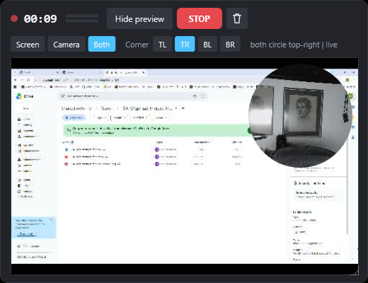
MQS_HUD_CAPTURABLE=1. Circular inset, top-right. Status line reads
both circle top-right | live. Screen content visible at every corner of the inset's bounding box.| Expected | Centre and diameter controls over a LIVE camera image; moving the centre and changing the diameter each visibly change what the circle contains. Three screenshots: default, centre moved, diameter changed. |
|---|---|
| Actual | All three, each showing a different part of the frame inside the circle. |
The Camera tab of the preset editor carries Shape (Circle / Rectangle), Left / right,
Up / down, Diameter, Corner, Size on screen and Reset framing,
beside a live 480x360 pane. The sliders were driven through UI Automation
(RangeValuePattern.SetValue) on CircleXSlider, CircleYSlider,
CircleSizeSlider.
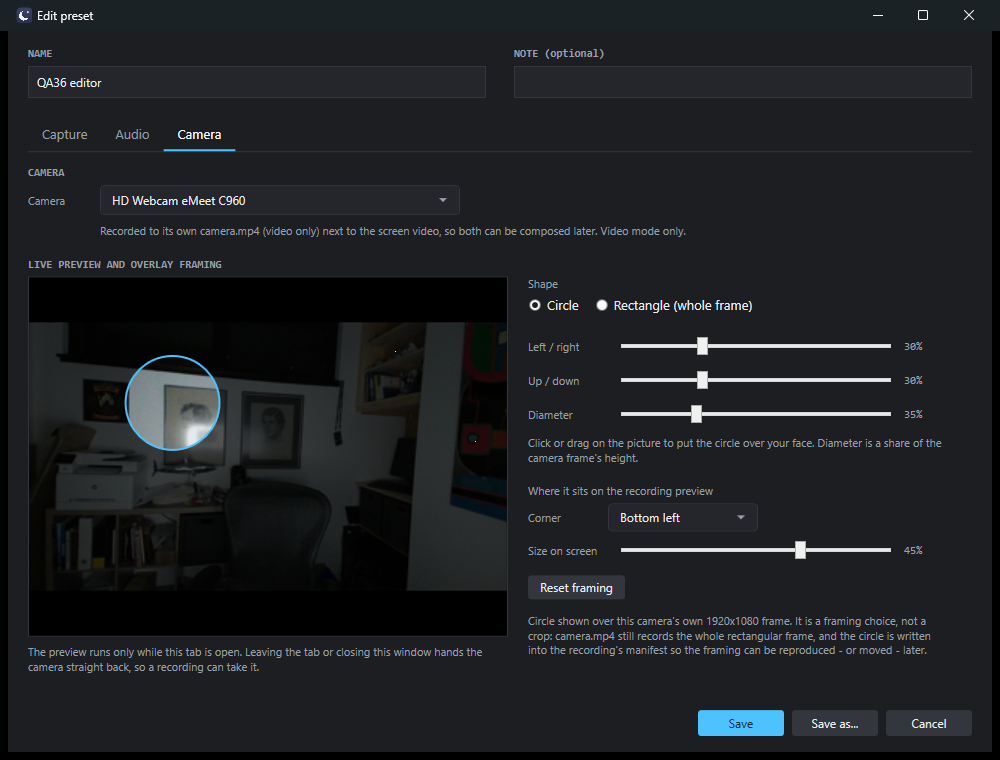
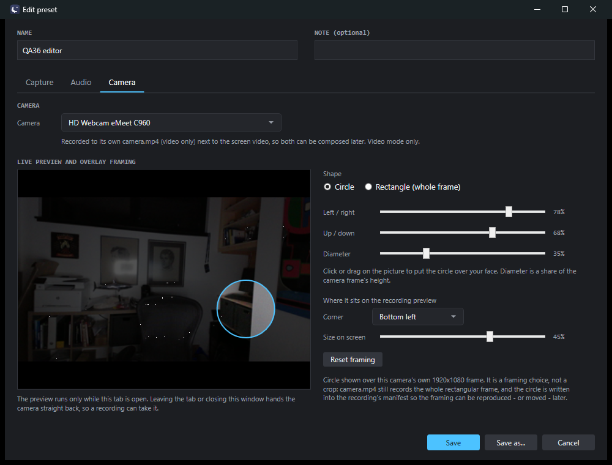
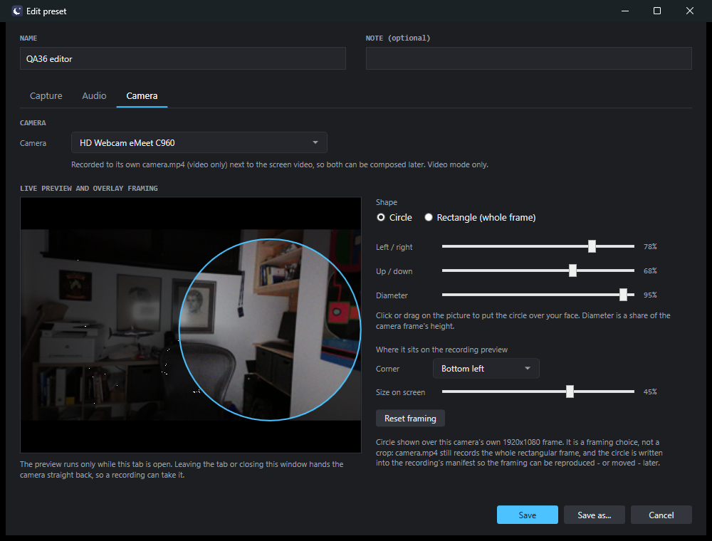
Worth noting because it is the trap the developer flagged and it holds: the pane shows a
padded 320x240 buffer, and the camera is 1920x1080, so the picture occupies a
letterboxed band with black bars above and below. The circle is drawn inside that band, not
across the whole pane - visible in all three screenshots - and the hint reads
"Circle shown over this camera's own 1920x1080 frame." When the size has not been reported,
PreviewContentRect() returns null and the editor draws nothing and says so
(PresetEditor.xaml.cs:557-573, 587-606). It never assumes the picture fills the pane.
| Expected | A preset saved with a chosen centre and diameter produces a HUD preview during recording whose circle matches that choice. |
|---|---|
| Actual | It matches, and the match was checked arithmetically as well as by eye. |
The preset QA36 editor was saved from the editor with centre 0.78 / 0.68, diameter 0.35,
corner bottom-left, size-on-screen 0.45. Starting a recording from it seeded the config exactly:
config.json after PresetCapture.Start -> HudOverlayConfig.Seed: HudPreviewShape : circle HudPreviewCorner : bottom-left HudPreviewInsetFraction : 0.45 HudPreviewCircleCentreX : 0.78 HudPreviewCircleCentreY : 0.68 HudPreviewCircleDiameter : 0.35
Rather than rely on "these two pictures look alike", QA computed the crop the geometry model says
the HUD must draw and compared it against what the HUD drew. From the un-padded 480x270 tap frame,
for centre (0.78, 0.68) and diameter 0.35 at aspect 1.7778, the viewbox is
x=327.2 y=136.4 w=94.5 h=94.5 px. That region of the raw frame is a dark cabinet with a
lighter vertical wall strip on its right - which is exactly what the HUD circle contains.
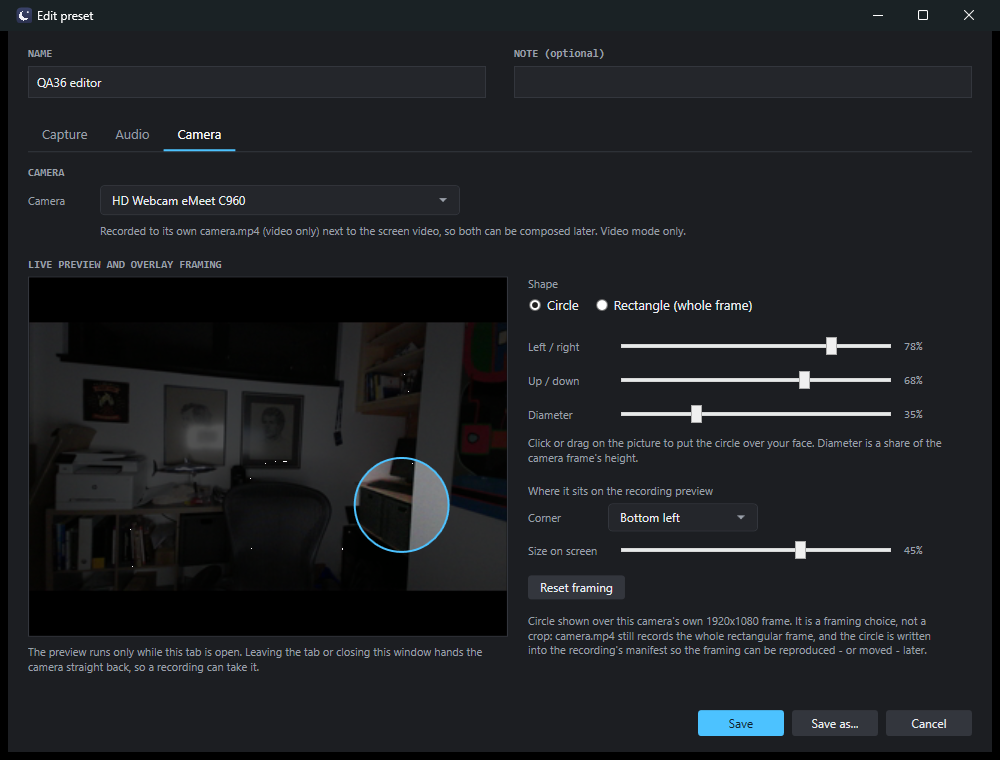
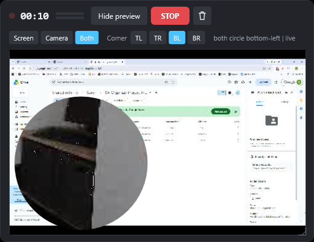
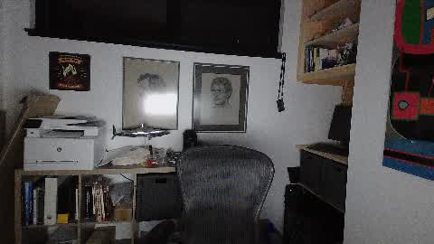
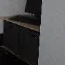
| Expected | After a circle-overlay recording, manifest.json records the shape, the circle centre and diameter (resolution-independent), the corner and the inset size. |
|---|---|
| Actual | All four present, the circle as fractions of the frame. |
manifest.json (2026-08-29_033356_video, circle run - committed as qa/ac4-manifest-circle.json)
"CameraFile": "camera.mp4",
"CameraComplete": "yes",
"PreviewOverlayCorner": "bottom-left",
"PreviewOverlayShape": "circle",
"PreviewOverlayCircle": {
"CentreX": 0.5,
"CentreY": 0.42,
"Diameter": 0.6
},
"PreviewOverlayInset": 0.3,
The centre and diameter are fractions, not pixels (assumption E2), so the preset survives a camera or
resolution change - CameraOverlayCircle.ClampedTo fits stored fractions to whatever frame it
is handed at draw time rather than rewriting them on save
(src/AgentEyes.Core/Preview/CameraOverlay.cs:118-141).
| Expected | ffprobe width/height for a circle recording, a rectangle recording and a preview-off recording, all identical. |
|---|---|
| Actual | 1920x1080 in all three. Nothing was cropped. |
ffprobe -v error -select_streams v:0 -show_entries stream=width,height,codec_name ... camera.mp4 === circle 2026-08-29_033356_video === codec_name=h264 width=1920 height=1080 duration=39.23 === rectangle 2026-08-29_033542_video === codec_name=h264 width=1920 height=1080 duration=26.83 === preview-off 2026-08-29_033641_video === codec_name=h264 width=1920 height=1080 duration=16.00
A circle of diameter 0.60 baked into the file would have produced roughly 648x648. It did not, in the
run whose own manifest records "PreviewOverlayShape": "circle". The full rectangular frame
survives, which is the whole point: the framing can be moved later because the pixels outside the circle
were never thrown away.
The code path agrees. No overlay value reaches the camera recorder:
FfmpegArgs.cs and FfmpegCameraRecorder.cs contain no reference to the overlay,
and RecordingService passes the framing only to manifest
(RecordingService.cs:754-769). The committed test TheOverlay_NeverReachesTheCameraRecorder
asserts the same thing as a source scan - which is an ABSENCE check and therefore fails open; its own
file header says so, and says that camera.mp4 is ffprobe's answer. It is. The ffprobe numbers above are
the load-bearing instrument for AC5, not that test.
| Expected | Selecting rectangle reproduces today's rectangular inset. |
|---|---|
| Actual | The #33 inset exactly: bordered box on black, whole frame, auto-height from the frame's aspect. |
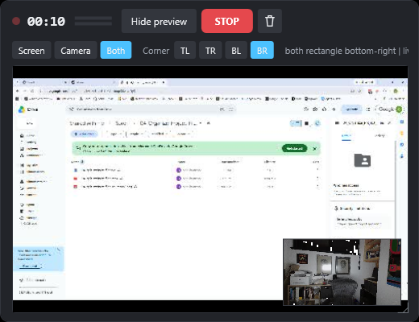
QA36 rectangle preset. Status both rectangle bottom-right | live.
The WHOLE camera frame is inset, which is the visible difference from AC1's crop.manifest.json (rectangle run - qa/ac6-manifest-rectangle.json) "PreviewOverlayCorner": "bottom-right", "PreviewOverlayShape": "rectangle", "PreviewOverlayInset": 0.3, (no "PreviewOverlayCircle" key at all - a rectangle frames the whole frame, so there is no circle to record)
| Expected | The corner chosen in the preset is the corner the HUD shows at recording start; changing the corner on the HUD mid-recording takes effect immediately and does not corrupt the saved preset. |
|---|---|
| Actual | All three, and the preset file is byte-identical afterwards. |
The test was set up so a failure could not hide: the preset said top-right while
config.json still said top-left. If seeding were absent the HUD would have shown
top-left.
before REC: presets.json "QA36 circle".Overlay.Corner = "top-right"
config.json HudPreviewCorner = "top-left"
after REC: GET /status PreviewOverlayCorner = "top-right" <- the PRESET won
HUD status line = "both circle top-right | live"
HUD screenshot = circle in the TOP-RIGHT corner
click HUD "Preview corner bottom-left":
GET /status PreviewOverlayCorner = "bottom-left" (immediately, same second)
HUD status line = "both circle bottom-left | live"
HUD screenshot = circle in the BOTTOM-LEFT corner, BL chip selected
config.json HudPreviewCorner = "bottom-left"
presets.json SHA256 before = E0FB2B6F...C2085
presets.json SHA256 after = E0FB2B6F...C2085 (unchanged)
presets.json "QA36 circle".Overlay.Corner= "top-right" (the preset is intact)
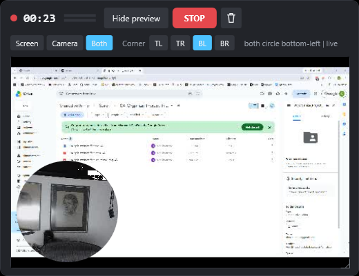
The design that makes this structural rather than lucky: HudOverlayConfig is one-way -
preset --Seed()--> config --Read()--> HudPreviewState --Write()--> config - and there is no
code path from the HUD to presets.json at all (src/AgentEyes.App/HudOverlayConfig.cs).
| Expected | With the circle overlay active, killing the preview feed mid-recording leaves the recording running and completing normally - both files valid, CameraComplete: yes on a clean stop. #33's AC10 must still hold. |
|---|---|
| Actual | It holds. |
The kill: exclusive FileShare.None handles taken on
%LOCALAPPDATA%\AgentEyes\preview\camera.jpg and screen.jpg while a
circle-overlay recording was running, held for 23 seconds, released only after the stop was issued.
That makes PreviewTap.Publish's File.Move fail on every frame.
before kill : state=recording shape=circle corner=bottom-left PreviewFailed=False camFrames=765
during kill : state=recording elapsed=94.1 PreviewFailed=True camFrames=945 <- the DRAIN kept reading
still later : state=recording elapsed=99.3
after stop : DurationSeconds = 104
CameraCapturedSeconds = 104.59
CameraStopKind = "clean-quit"
CameraComplete = "yes"
PreviewOverlayShape = "circle" (the framing still reached the manifest)
ffprobe recording.mp4 -> h264 1920x1080 + aac, duration 104.000, size 2,998,041
ffprobe camera.mp4 -> h264 1920x1080, duration 104.700, size 315,138,631
The frame counter rising from 765 to 945 while PreviewFailed was true is the
load-bearing number: the pipe drain never stopped, which is what keeps a full pipe from blocking the
ffmpeg that is writing the recording.
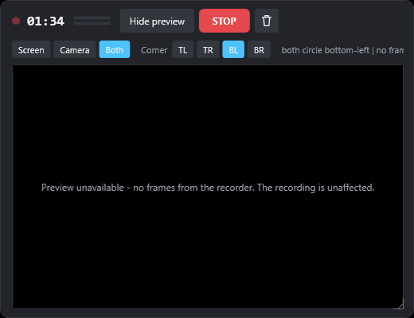
both circle bottom-left | no fra.... The recording ran on.| Expected | A 60-second circle-overlay recording drops no more frames than a preview-off control of the same length on the same machine, and still meets the camera-track duration limit. Report both numbers. |
|---|---|
| Actual | 5 dropped frames with the overlay, 5 without. Both numbers reported below. |
Two back-to-back 60-second runs on this machine, same preset, same monitor, same camera, driven by
identical scripted timings. Full log lines are committed at qa/ac9-ffmpeg-drop-counts.txt.
| A - circle overlay active | B - preview OFF (control) | |
|---|---|---|
| screen ffmpeg frames | 976 | 975 |
| screen ffmpeg drop= | 5 | 5 |
| screen dup= | 0 | 0 |
| camera ffmpeg frames | 1313 | 1313 |
| DurationSeconds | 65.87 | 65.87 |
| CameraCapturedSeconds | 66.43 | 66.43 |
| CameraComplete | yes | yes |
| CameraStopKind | clean-quit | clean-quit |
A: frame= 976 fps= 15 q=-1.0 Lq=8.0 size= 1568KiB time=00:01:04.34 dup=0 drop=5 speed=0.99x B: frame= 975 fps= 15 q=-1.0 Lsize= 1565KiB time=00:01:04.18 dup=0 drop=5 speed=0.987x
Equal, not merely "no worse within noise". The camera-track duration limit is met in both:
CameraComplete is "yes", which CameraTrackRecord will not write
unless the observed capture and the stderr completeness both agree.
Honest limit on this measurement: gdigrab drop counts on a live desktop are load-dependent, and #33's own table showed identical control runs varying from 2 to 53. Two runs cannot resolve a small effect. What they can and do resolve is the failure AC9 is guarding against - masking becoming the thing that costs frames - which would not present as 5 vs 5.
| Expected | A recording made with the preview off is identical in shape and manifest content to what it is today, with no overlay geometry written. |
|---|---|
| Actual | Zero PreviewOverlay* keys in the manifest; camera.mp4 unchanged at 1920x1080. |
Run with HudPreviewVisible=false, camera preset unchanged (2026-08-29_033641_video):
GET /status -> PreviewOverlayShape = (null), PreviewOverlayCorner = (null),
PreviewPublishing = False, PreviewAvailable = False
manifest.json: regex /PreviewOverlay\w*/ matched 0 times in the whole file
(not "null" - the keys are ABSENT, because Manifest.JsonOptions carries
DefaultIgnoreCondition = WhenWritingNull)
ffprobe camera.mp4 -> 1920x1080, same as the circle and rectangle runs
This one was verified at runtime deliberately rather than left to the suite - see finding F1.
Section 2. Build clean from an isolated worktree, 1138/1138 tests green, geometry-model and manifest round-trip tests present and shown to fire (Section 4).
Per DEVELOPMENT_METHOD 6c item 3, a check only ever run against the state you hope passes has demonstrated nothing. Twelve mutations were applied to the PRODUCT code in QA's worktree, each built and run against the full suite, each reverted afterwards. The developer's own mutation evidence was not reused.
| # | Mutation | Claim it attacks | Suite result |
|---|---|---|---|
| M1 | PreviewNames.Shape unknown-value default flipped Circle -> Rectangle | AC1 default | 6 failed |
| M2 | manifest.PreviewOverlayShape = ... deleted from the stop path | AC4 | 1 failed |
| M3 | ... = previewOverlay?.Shape ?? "circle" - writes overlay when NONE was framed | AC10 | 0 failed - SILENT (finding F1) |
| M4 | HudOverlayConfig.Seed made a no-op | AC3, AC7 | 4 failed |
| M5 | ClampedTo stops clamping the centre into the frame | AC11 clamping | 2 failed |
| M6 | ImageBrush.Viewbox removed from the HUD circle - a shrunken whole frame instead of a crop | AC1 crop | 1 failed |
| M7 | Circle host given a black background and a border again | AC1 transparency | 1 failed |
| M8 | CameraFrameSize reads ffmpeg's Output block as well as Input | AC2 placement | 1 failed |
| M9 | ManifestOverlay returns the live object rather than a copy | AC4 immutability | 1 failed |
| M10 | CapturePreset.Clone shares the overlay instead of deep-copying | preset isolation | 1 failed |
| M11 | Inset width hard-coded back to 0.30 | E5 inset size | 1 failed |
| M12 | HudPreviewState.SetCorner made a no-op | AC7 mid-recording | 5 failed |
Eleven of twelve fired. The one that did not is recorded as finding F1 rather than glossed, and the claim it failed to defend was verified at runtime instead (AC10 above).
Mutation M3 - manifest.PreviewOverlayShape = previewOverlay?.Shape ?? "circle", which
writes overlay metadata into a recording that never framed an overlay - passes all 1138 tests.
Manifest_WithNoOverlayAtAll_WritesNoneOfTheOverlayFields builds a Manifest
directly and never exercises RecordingService's real write path (RecordingService.cs:754-769),
so nothing guards the "null in, absent out" contract where it actually happens. The product code is
correct and QA proved it at runtime, but the regression guard is missing. Suggested follow-up: a test
that drives the stop path with _previewOverlay == null and asserts the four keys are absent.
CameraOverlaySettings exposes ShapeValue, CornerValue and
ClampedInsetFraction as public get-only properties, so System.Text.Json serialises them into
presets.json alongside the fields they are derived from:
"Overlay": {
"Shape": "circle", "Circle": { ... }, "Corner": "bottom-left", "InsetFraction": 0.45,
"ShapeValue": 0, "CornerValue": 1, "ClampedInsetFraction": 0.45 <- derived, written to disk
}
QA verified the round-trip is unaffected: reopening the editor loaded 0.78 / 0.68 / 0.35 / 0.45 and
Bottom left correctly, because get-only properties are ignored on deserialisation. So this is not a
defect against any criterion. It is a durability trap: a human editing Shape by hand leaves
a ShapeValue on disk that contradicts it, in a file the project's own comment describes as
"one value, one home, no drift". Suggested follow-up: [JsonIgnore] on the three derived
properties.
The handoff tells QA that "the UIA element HUD preview status now reads
<mode> <shape> <corner> | live" and that this is the assertable surface,
since the HUD cannot be screenshotted. It is not. AutomationName(_previewStatus, "HUD preview status")
(HudWindow.cs:275) sets AutomationProperties.Name, which REPLACES the TextBlock's text as the
UIA Name. Measured on the running app:
UIA Name of the element : "HUD preview status" <- the label, not the status TextPattern : not supported ValuePattern / HelpText : not supported / empty
The status text is readable only from a PrintWindow capture with
MQS_HUD_CAPTURABLE=1. The screenshot-free surface that DOES work is
GET /status, which this change correctly extends with PreviewOverlayShape
alongside PreviewOverlayCorner - QA used it throughout. No product change is needed; the
handoff note should be corrected so the next agent does not lose time on it.
This branch sits on issue-35-preset-editor-two-columns, which forked from
issue-33-hud-live-preview at 178cf2a. #33's round 4 (tip b61f71a)
introduced HudUserResize.cs, removed HudWindow.ResizeBy and added an
OnCreateAutomationPeer override - none of which is in this branch's base.
QA checked #36's compliance with both: it adds no automation peer of any kind (the diff contains no
AutomationPeer), and it does not call ResizeBy from any new code - the single
call site is the pre-existing grip handler at HudWindow.cs:291. So #36 is compliant. But #36's additions
to LayOutInset and the new PaintCameraFrame sit close to the code #33 round 4
rewrites, so the eventual reconciliation of the stack will need a real merge of
HudWindow.cs rather than a fast-forward. Flagged for the orchestrator, not a defect in this PR.
%LOCALAPPDATA%\AgentEyes\app\AgentEyesApp.exe reports
ProductVersion 1.6.2+75e62adbb1ddd8ddcf6e8075fc3298442a242ddb - the unmerged head of this
PR, deployed before QA ran. Noted only because DEVELOPMENT_METHOD 6a treats deploying as a separate,
explicitly-requested step; it has no bearing on the criteria. QA verified against its own worktree build
throughout, never this one, and restored it at the end.
| Item | State |
|---|---|
| Installed v1.6.2 tray app | Displaced for the duration (it owns port 7882 and the DirectShow camera), then relaunched. GET /version -> {"app":"AgentEyes","version":"1.6.2"}. |
config.json | Restored. SHA256 D60F3C217FAD8F27C0DCC14F73F5DD570B5FE68DC1ED9E357CCB603189424C84 - identical to the pre-QA hash. |
presets.json | Restored. SHA256 BFFC4252433C9D4FAAE973E032B9E83874FF56DC83336719013BF42FA5C62219 - identical to the pre-QA hash. The three QA36 * presets are gone. |
| Test recordings | All 8 deleted from %USERPROFILE%\Videos\AgentEyes. Newest surviving directory is 2026-08-28_234202_video, which is the human's. |
| ffmpeg processes | Zero. Checked after the run: Get-Process ffmpeg returns nothing. |
| Branches / worktrees | QA worked in its own agenteyes-qa36 worktree. Nothing was touched in issue-28-*, issue-33-* or issue-35-*. |
PASS - 11 of 11 acceptance criteria verified with proof. No criterion was passed blind, no criterion was redefined to make it pass, and every criterion that needed the running app was driven by QA rather than handed to anyone else.
Per DEVELOPMENT_METHOD decision D7, QA does not merge. The issue moves to
flow:ready-gate for the independent Review Gate, with findings F1-F5 above offered as
review material.
QA Agent - CenCon Development Method - AgentEyes. Issue #36, PR #38, head 75e62ad. 2026-08-29.